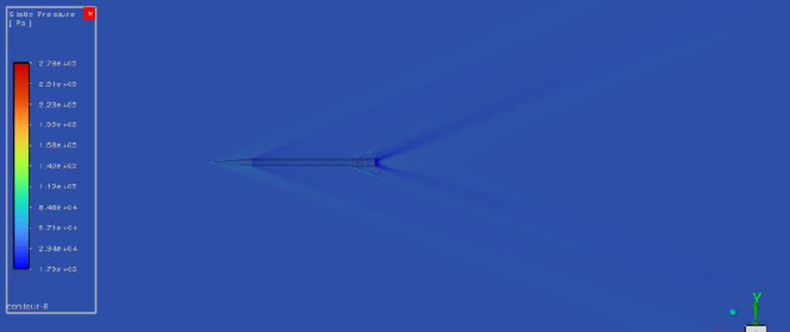
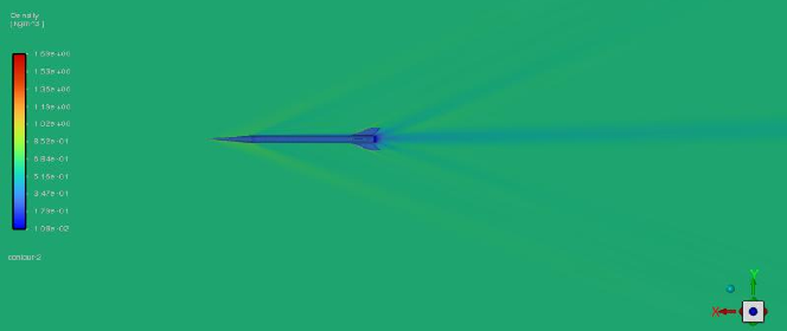
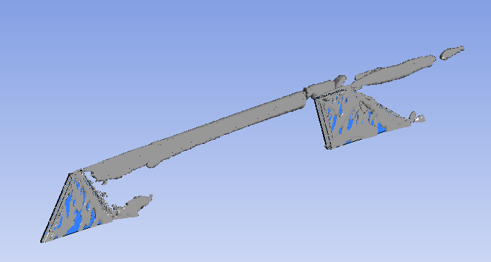
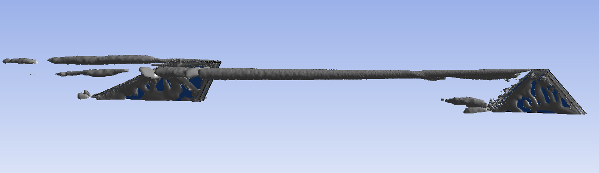
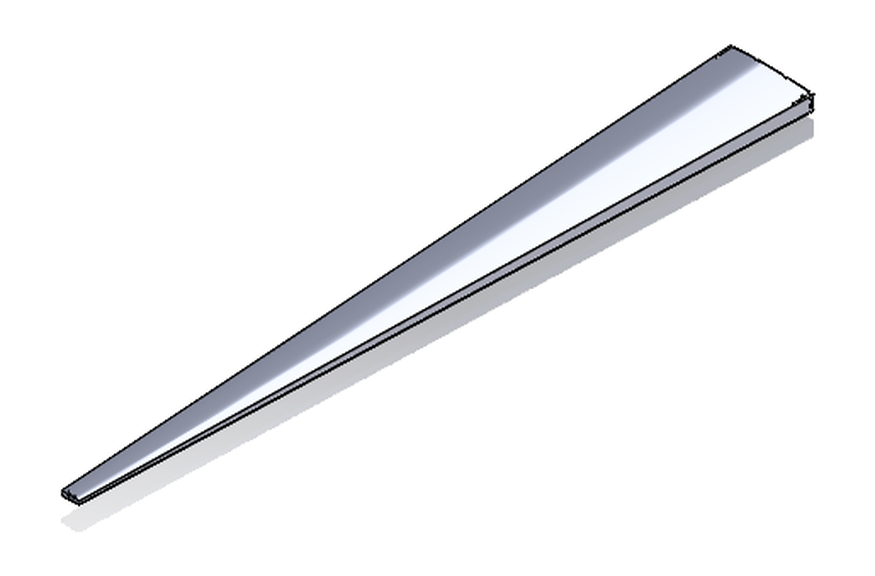
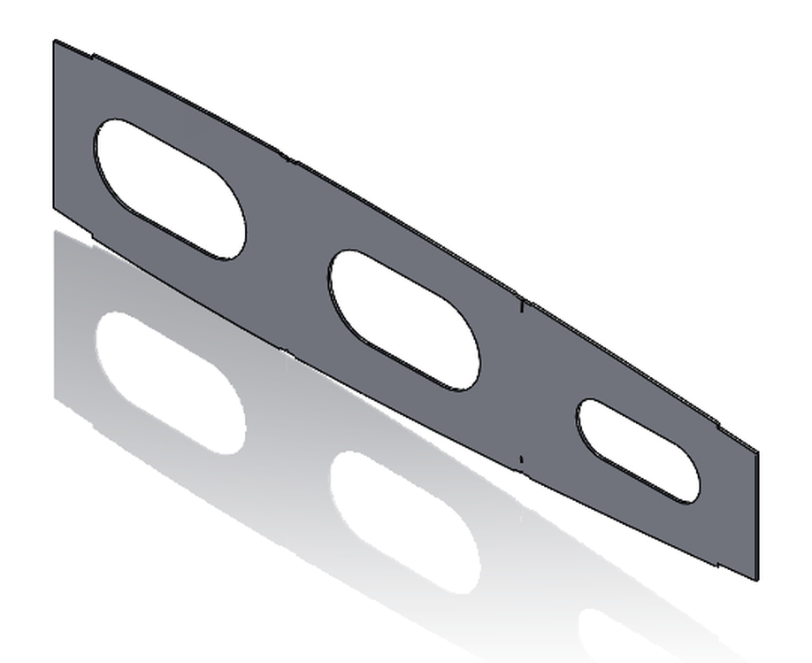
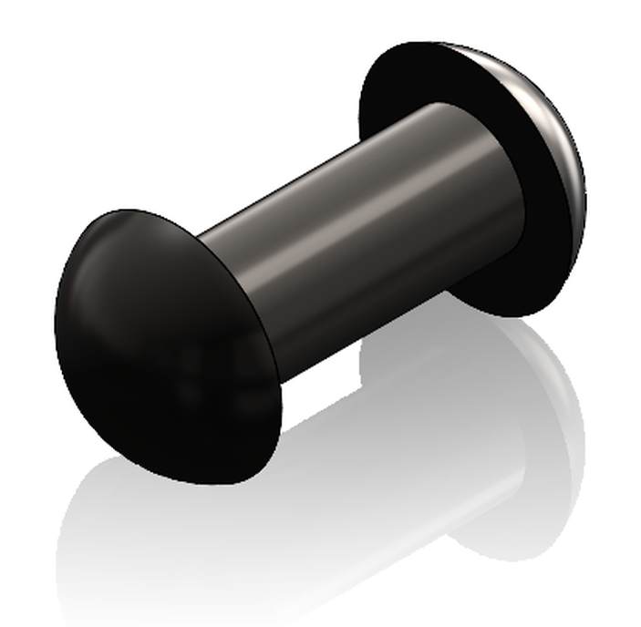
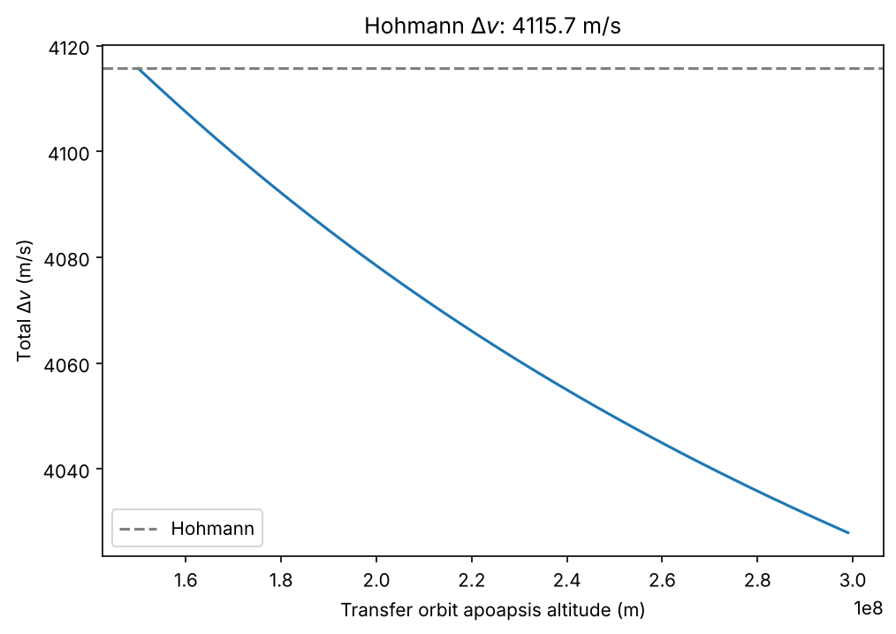
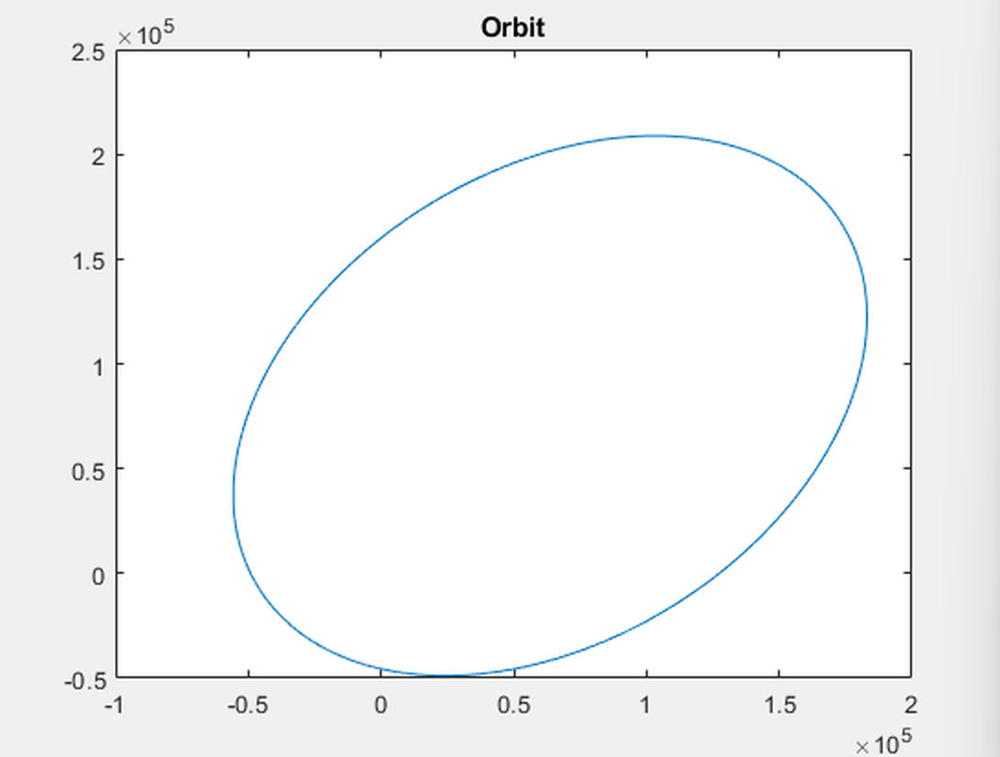
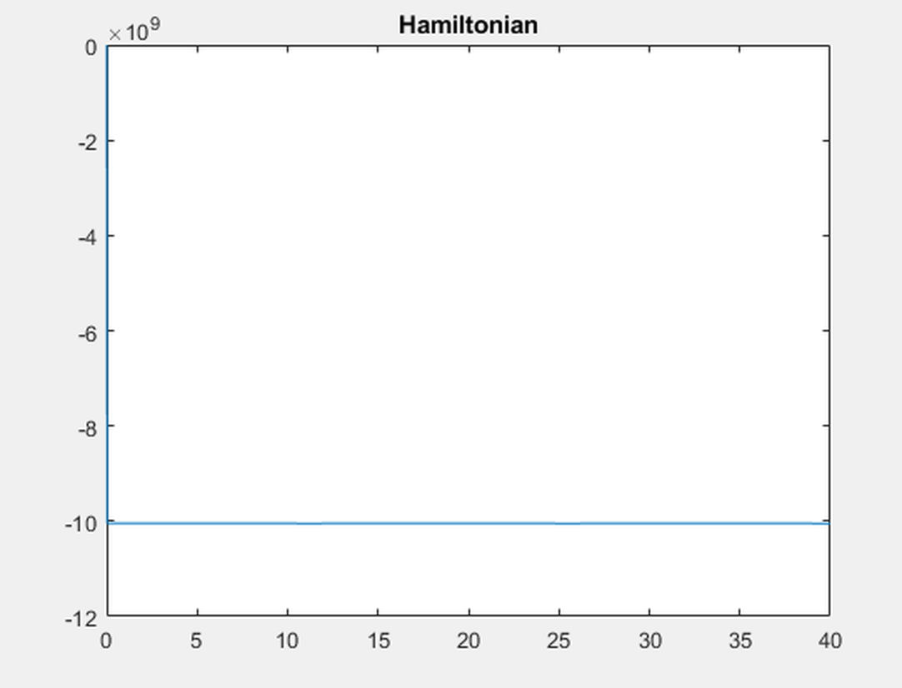

✕
Supersonic nosecone at Mach 2.75
March 2026 · WARR, TUM · Ansys Fluent
Work in the WARR aerodynamics group. I simulated a slender nosecone at Mach 2.75, 6 300 m altitude and 2° angle of attack,
using k-ω SST on a volume mesh of 7.5 million cells with an average orthogonal cell quality
of 0.915.

Static pressure. The shock leaves the tip and a second one forms at the shoulder,
where the cone meets the body.

Density, same case. The wake behind the body is clearer here than in the pressure
field.
The check. A simulation is only worth what you can verify, so I measured the
shock angle directly off the pressure field and read 25.282°. The oblique-shock relation, for a
4.7° cone sitting at 2.7° to the flow, gives 25.1°. That puts the simulation within 1.8% of
theory.
Measuring the shock angle in ImageJ: one line along the flow axis, one along the
shock, giving 25.282°.
Convergence stayed loose. y+ came out above 100, which k-ω SST does not handle well,
and 367 cells fell into the low-orthogonality band. Refining further was not an option, since 7.5
million cells was already the limit of the machine I had. The angle was also measured by hand off
an image, so the 1.8% carries that uncertainty with it.
Ansys Fluent · k-ω SST · meshing · ImageJ
Fin-tip vortices on a rocket
May 2026 · own project · Ansys Discovery 25.2, Workbench 2025 R2
I built the geometry and the flow case in Ansys Discovery and carried it into
Workbench to see where the vortices form on the fins and how far downstream they survive.

The blue structures are vortices forming against the fin surfaces. The grey core
running between the fin sets is the vortex trailing from the forward fin tips.

From the side: the cores shed at the forward fins run the length of the body, reach
the rear fins and break up past them.
A good share of the work went into finding viewing angles and isosurface levels that
show the structure instead of a solid blob. Two further views I captured turned out to say little,
so they are not here.
This study is qualitative. I ran no grid-convergence study and had nothing to check
the vortex strength against, so it shows the shape of the flow and not much more.
Ansys Discovery · Ansys Workbench · post-processing
Joukowski airfoil solver
August 2026 · on my own · Python, about 180 lines
A potential-flow solver built on conformal mapping. It starts from a cylinder in
horizontal flow, rotates by −AoA, translates by the circle-centre offset and applies the Joukowski
map. The stream function is evaluated on a polar grid and mapped forward, which avoids root-finding
and leaves no gaps in the streamlines.
The script's own output, run unmodified at its committed settings: 1° angle of
attack, free stream 20 m/s, chord 4.03, lift 733.87 N/m, drag 8.23 N/m.
Circulation comes from the Kutta condition, found by tracing the trailing-edge
critical point back into the horizontal-flow plane. Lift then follows from Kutta–Joukowski. The
script does not assume the geometry; it recovers it from the mapped boundary, giving chord, upper
and lower surfaces, the thickness distribution and t/c. Drag is a separate estimate: flat-plate
skin friction picked by Reynolds regime, scaled by a Hoerner form factor from that t/c.
The flow is incompressible and inviscid, so the drag figure is bolted on afterwards
rather than solved for, and it only means anything at small camber and small angle of attack. The
sign convention on the rotation and the circulation formula have to agree; a comment in the file
marks where that caught me out.
Where it holds. Potential flow, so incompressible and inviscid, with the free
stream at 20 m/s in the run shown. It is valid at low speed, small angles of attack and modest camber and
thickness. Outside that range the results stop meaning anything: potential flow has no separation,
so lift keeps rising past the stall, and the drag figure is a flat-plate correlation that was not
intended for thick or strongly cambered sections. Drag depends on the shape alone, so it does not
change with incidence.
Python · NumPy · Matplotlib · conformal mapping
Shrinking MobileNetV3 for EuroSAT
July 2026 · TUM course project with Leon Blum · 16-page report
We wanted to know how far a land-cover classifier can be shrunk before it stops being
useful. The models were ordinary MobileNetV3 on EuroSAT RGB. What made the project interesting was
a failure in the middle of it.
We first benchmarked candidate architectures under a fixed protocol, same seed, same
patience, same split, and changed the comparison method once the first round showed it was
measuring the wrong thing. Then we swept one-shot structured pruning from 0 to 0.9 on both model
sizes, recording file size, memory, parameters, MACs, accuracy and macro-F1 at every step.
Size against accuracy across the pruning sweep
EuroSAT RGB, structured pruning at fp32. Each point is one pruning ratio from 0 to 0.9.
86%
90%
94%
98%
0.3
1
3
10
Model file size, MB, log scale
Large
Small
Show the numbers
Ratio Large, MB Large, acc. Small, MB Small, acc.
0 16.279 0.9777 5.961 0.9562 0.1 13.121 0.9491 4.718 0.9444 0.2 10.516 0.9347 3.789 0.9286 0.3 8.064 0.9228 2.946 0.9198 0.4 6.045 0.8904 2.218 0.9063 0.5 4.301 0.8930 1.661 0.8964 0.6 2.842 0.8956 1.079 0.9351 0.7 1.714 0.8822 0.675 0.9323 0.8 0.792 0.8695 0.421 0.9105 0.9 0.447 0.9159 0.271 0.9301
Table 1 of the report, unaltered.
The failure. int8 quantization dropped MobileNetV3-Small from 0.9737 accuracy
to 0.1346. Rather than abandon the method, we ran leave-one-in and leave-one-out tests block by
block to find where the damage came from. features.1 accounted for roughly 80
percentage points on its own. Keeping that single block in fp32 brought accuracy back to 0.9420.
Combining 90% pruning with selective int8 gave 0.06 MB at 0.876 accuracy for Small and
0.11 MB at 0.857 for Large, down from baselines of 5.88 MB and 16.17 MB.
We ran each condition once, so small differences, including the roughly 2% that looks
like a gain at high pruning ratios, cannot be separated from run-to-run variance.
Quantization-aware training and iterative pruning would probably both do better. Both sat outside
the course scope, and we wrote that down rather than implying the numbers were the best
available.
PyTorch · Torch-Pruning · int8 quantization · EuroSAT · benchmarking
PhoneHive
Since early 2026 · own project, with one other developer
A private alternative to cloud storage. A small box turns recycled Android phones and
USB drives into a personal NAS that the owner reaches from any browser, with no subscription and no
app to install. I lead the development and own the architecture and the device-side code.
Python and Flask on a Raspberry Pi. Files are split into 1 MB chunks and spread
across whichever devices are plugged in, with the chunk index in SQLite. Every transfer is streamed,
so peak memory stays at one chunk on a 1 GB board however large the file is. Phones are driven
over ADB, USB sticks through the mounted filesystem, and both sit behind one backend interface, so a
new device type needs a module and a registry line rather than changes throughout.
How it is checked. A 146-test suite covers the device layers, the database, the
routes and the storage manager, with ADB mocked and USB mounts faked in temporary directories. At
runtime each device is qualified at setup with a 64 KiB write-and-read-back test, and every
chunk written is read back and its size confirmed before the file index is updated, so a partial
upload never appears in the listing.
It works as a local NAS today. The remote-access tunnel, which reaches the box behind
home CGNAT without port forwarding or any inbound port, and the encryption layer that keeps the
central server from reading user files, are what I am building now. The source is closed, but I am
glad to walk through the architecture and the trade-offs.
Python 3 · Flask · SQLite · ADB · Raspberry Pi · unittest
Stiffened-panel stability analysis
May 2026 · TUM coursework · Python, four modules
Sizing a stiffened panel by hand means a great deal of repeated arithmetic, so I wrote
the toolchain instead. It reads the FE element stress tables, computes every reserve factor and
writes the answers back into the cells of the submission template.
The code sits in four parts: a function library for the stability checks, a CSV
read-and-write layer, a configuration module holding the geometry, and a driver script. Changing a
stringer dimension is one line. The checks cover biaxial and shear panel buckling with the
aspect-ratio-dependent k factors, crippling stress for both T- and Ω-stringers, and column buckling
switched on slenderness against λcrit . Three load cases run through it, and the FE
output is parsed by locating the header row rather than trusting a fixed offset.
def RF_panelbuckel(avgEmod, PoissonRatio, thickness,
shortSide, longSide,
StressXX, StressYY, StressXY):
def sig_crip_T(t2Tstr, t1Tstr, a12Tstr, a11Tstr,
BbaseEmod, yieldStrengh):
def collum_buckeling_RF(lenghtSTR, I, A, yieldStrengh,
sig_crip, BbaseEmod, sig_bar, A_panel):
Three of the ten functions in ASEfunktions.py.
Writing results straight into the template removed the transcription mistakes I kept
making by hand. The input CSVs are not published with the code, and the panel geometry is fixed in the
configuration module, so it solves this coursework problem well without being a general sizing
tool.
Python · pandas · NumPy · reserve factors · FE post-processing
Wing box assembly
January to February 2025 · TUM coursework · SolidWorks
The box is made up of an upper and a lower shell, a front and a rear spar, a root rib
and an L-bracket. Each was modelled as its own part and then constrained into an assembly, joined
with a DIN-standard rivet rather than a placeholder feature. The model went through two submission
rounds.
This is geometry only: it was never sized against a load case or taken into FE.

The assembly, shaded. The box tapers from the root rib out to the tip.

Root rib, with three lightening holes.

The DIN rivet used at the joints.
Parts in the assembly, with the date each was last saved.
Upper shell 26 Jan 2025 Front and rear spar 26 Jan 2025 Lower shell 4 Feb 2025 Rivet, DIN 10 Feb 2025 Root rib 11 Feb 2025 L-bracket 11 Feb 2025 Final assembly 11 Feb 2025
SolidWorks · part and assembly modelling
Ramjet intake mock-up
October 2025 · WARR, TUM · SolidWorks
A mock-up of a ramjet intake, made during early concept work in the WARR aerodynamics
group. It is a shape to discuss and measure against rather than a part to build, and no flow
analysis was run on it.
I was with that group from March 2025 to September 2026, doing CAD in NX and
SolidWorks, CFD in Ansys Fluent, and post-processing of aerodynamic carbon-fibre parts. It also
drew me into conceptual design, system integration and performance analysis of prototype
systems.
The mock-up: a curved compression surface sweeping down to a rectangular throat.
SolidWorks · Siemens NX
Bi-elliptic versus Hohmann transfer
November 2026 · own project · Python
A Hohmann transfer raises a circular orbit with two burns. A bi-elliptic transfer uses
three: out to an intermediate apoapsis well beyond the target, a small burn there, then back down.
It costs an extra burn and a great deal of time, and it is only cheaper in Δv when the orbits
are far enough apart. The script works out where that line falls.
It computes the total Δv of the bi-elliptic transfer as a function of the
intermediate apoapsis, sweeping in 1 000 km steps, and draws the Hohmann result as a
reference line. The orbital speeds come from the vis-viva equation at each burn point.

Output for a 300 km to 150 000 km altitude raise, a radius ratio of 23.
Hohmann costs 4 115.7 m/s; the bi-elliptic route falls below that line and reaches
4 028 m/s at a 300 Mm apoapsis, about 88 m/s cheaper.
The crossover is the interesting part. Running the same script for a standard
300 km to GEO raise, a radius ratio of 6.3, the bi-elliptic curve never drops below the
Hohmann line, which matches the textbook result that the three-burn route only pays off at large
radius ratios.
Impulsive burns, coplanar circular orbits, no plane change, and two-body gravity only.
It compares Δv and nothing else, so the very long flight time of a bi-elliptic transfer, which
is usually what rules it out, does not appear in the answer.
Python · Matplotlib · vis-viva
Orbital motion with a symplectic integrator
May 2026 · on my own · MATLAB
A two-body orbit written in Hamiltonian form and integrated with symplectic Euler:
momentum updates first, and the new momentum is used for the position step. That ordering is what
keeps the energy error bounded instead of letting the orbit drift outward. The Hamiltonian is
evaluated at all 400 000 steps and plotted against time next to the trajectory, so the conservation
behaviour can be seen rather than assumed. The dynamics live in anonymous functions, which means
the force law can be swapped without touching the integrator.
%loop symplectic Euler
for k=1:step
p(:,k+1) = p(:,k) + Tao*(dp(x(:,k)));
x(:,k+1) = x(:,k) + Tao*(dx(p(:,k+1)));
Ha(k+1) = H(p(:,k),x(:,k));
end
The integrator, verbatim from the source file. Step size 1·10⁻⁴ over 400 000 steps.

The trajectory closes. The ellipse spans about 240 km by 260 km in the plotted
plane.

The Hamiltonian over the same run: flat at about −1.0 × 1010 J
for all 40 s.
The flat energy trace is the whole point. A plain forward Euler scheme on this problem
would bleed energy and spiral the orbit outward over 400 000 steps; updating momentum first and
feeding the new momentum into the position step keeps the error bounded instead of letting it
accumulate.
The model is deliberately narrow: two point masses, no perturbations and a fixed step
size. It is a test of the integrator rather than a propagator for a real mission.
MATLAB · symplectic integration · Hamiltonian mechanics
Four questions in aerospace
February 2025 · TUM, Introduction to Aerospace · eight pages, nineteen references
Four short literature-based essays, each taking a question that sounds simple and
following it until the trade-offs show up.
Could hydrogen replace kerosene? Hydrogen carries three times the energy per
kilogram, but liquid-hydrogen tanks need roughly four times the volume, wing tanks come out too
heavy to be practical, and operating costs land 2 to 3% higher. I also covered an unconventional
cycle that uses LH2 to cool engine bleed air, reported as raising thrust by 28% at almost unchanged
thrust-specific fuel consumption.
Why do fast aircraft have swept wings? The essay works through Meff =
M·cos(φ) and then the price paid for it. Less chordwise flow means less lift, which is why delta
wings with sharp leading edges recover some of it through vortex lift.
Could there be life on Europa? This one weighs the evidence for the subsurface ocean, including the
induced magnetic field Galileo measured, and sets out what Europa Clipper is instrumented to
settle.
Breakthrough Starshot. The last essay takes on the materials problem for a lightsail,
setting reflectance against sail thickness, radiative cooling under a 37 kW/m² beamer, and survival
of accelerations up to 14 900 g.
This was first-semester coursework and a literature review. The analysis is other
people's; the synthesis and the judgement about what the sources support are mine.
Literature review · technical writing · IEEE referencing